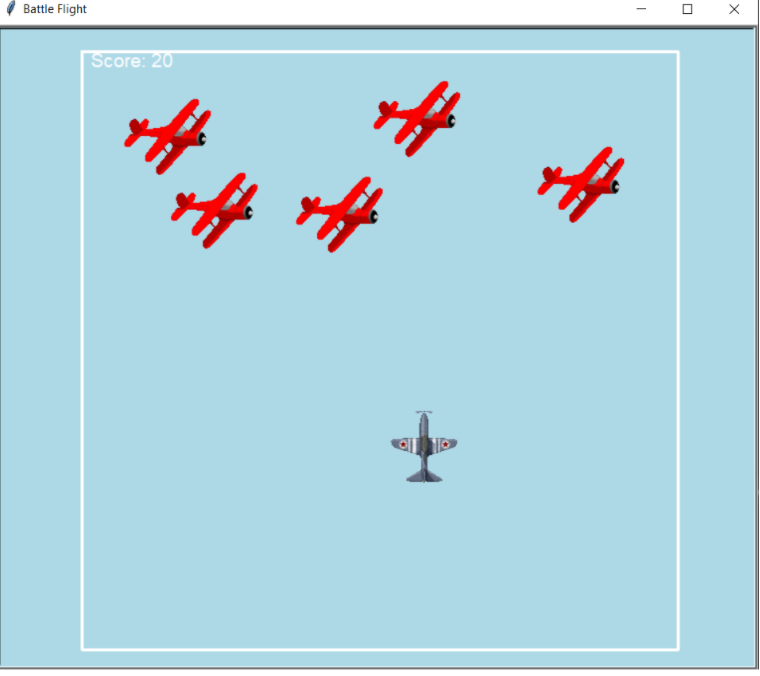
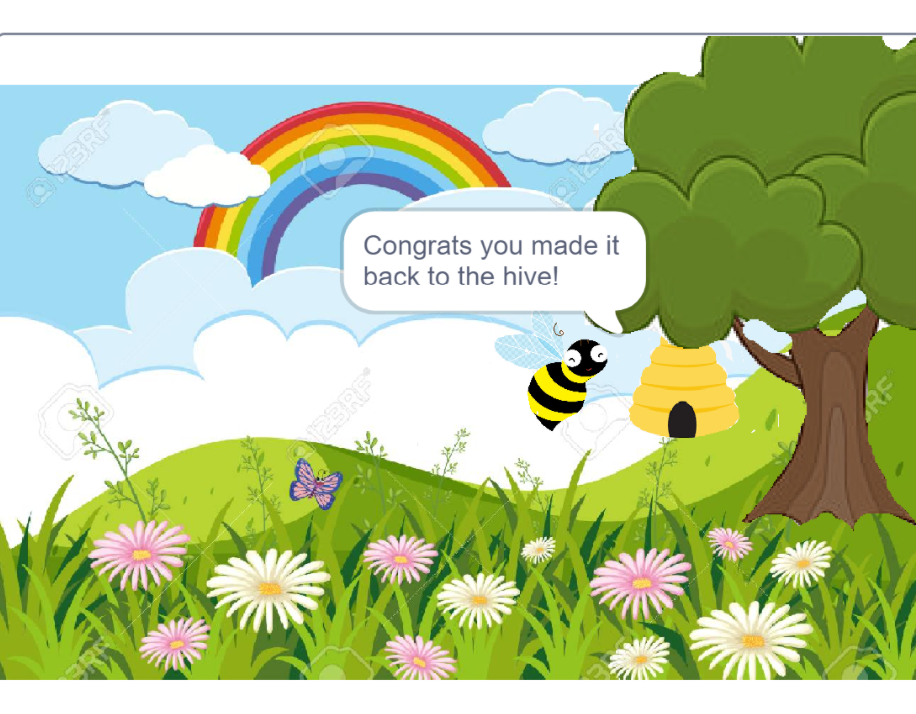

Project Battlestar (1.3.1): For this project we created a space invaders inspired game, where the user has to move their plane with arrow keys and shoot missiles with the spacebar towards moving enemy targets. Furthermore, we also included a timer and a scoreboard/leaderboard features to create competition between users. We used all the loops required within the performance task requirements for our features and incorporated color and movement throughout. Personally, I liked this concept the most out of the projects I have created so far for this class and it's sucess motivated us to keep adding more features.
Project BeeTravel (Scratch): With the scratch resource we designed a game where the user follows the journey of a bee while collecting coins along the way. We also made sure the movement was smooth by tying the movements of the bees to the user key arrows on the keyboard. Furthermore we implemented scoring functionality when the coins are collected where the score increases by 5 when a coin is collected by the bee. After collecting a certain amount of coins on a background we switch background with other movements in the background and other features such as moving bears, etc.